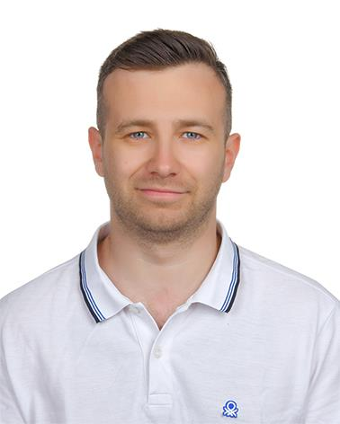

Bilgisayarlı görü
Nesne tespiti, takip ve video analitiğiyle görüntüleri ölçülebilir bilgiye dönüştüren sistemler.
Bilgisayar mühendisi / AI geliştiricisi
Görüntülerden anlam çıkaran, bilgiyi erişilebilir kılan ve fikirleri çalışan yazılımlara dönüştüren projeler geliştiriyorum.

01 / Ürettiklerim
Araştırmadan çalışan ürüne uzanan, farklı alanlarda geliştirdiğim açık kaynak çalışmalar.
Kişisel ders notlarıyla çalışan yerel bir yapay zekâ asistanı. PDF ve diğer belgeleri indeksleyip sorulara dosya ve sayfa bilgisiyle desteklenen yanıtlar üretir.
Görüntülerde nesne tespiti yapıp sınıf, güven skoru ve konum bilgisini API üzerinden sunan uçtan uca çalışma.
Ultrason RF verilerinden görüntü oluşturma yöntemlerini karşılaştıran, görüntü kalitesini ölçen araştırma laboratuvarı.
Model eğitiminden optimizasyona, nesne takibinden API ile sunuma uzanan video analitiği iş akışı.
02 / Odak alanlarım
Bir problemi yalnızca model düzeyinde değil, çalışan sistemin tamamı olarak ele alıyorum.
Nesne tespiti, takip ve video analitiğiyle görüntüleri ölçülebilir bilgiye dönüştüren sistemler.
Dil modelleri, kaynaklı soru yanıtlama ve RAG ile verinin kontrolünü kullanıcıda tutan çözümler.
API, veri altyapısı ve arayüzü bir araya getirerek fikirleri kullanılabilir ürünlere taşıma.
03 / Şu sıralar
Tez çalışmamda video tabanlı park yeri doluluk analizi ve tahmini üzerine odaklanıyorum. Hedefim görüntüden gelen veriyi anlaşılır göstergelere ve karar destek çıktısına dönüştürmek.
Devam eden çalışma04 / Araç kutum
Projenin ihtiyacına göre araştırma, modelleme ve uygulama katmanlarını bir arada düşünüyorum.
05 / Hakkımda
Ben Bekir. Bilgisayar mühendisiyim; yapay zekâ, bilgisayarlı görü ve yazılım geliştirme kesişiminde üretmeyi seviyorum.
Bir fikrin veriyle, modelle ve iyi düşünülmüş bir uygulamayla gerçek hayatta karşılık bulması benim için işin en ilgi çekici tarafı. Bu yüzden projelerimde yalnızca sonucu değil, süreci de görünür kılmaya çalışıyorum.
06 / Bağlantı
Çalışmalarıma, kodlarıma ve yeni denemelerime GitHub profilimden ulaşabilirsin.
GitHub'a git